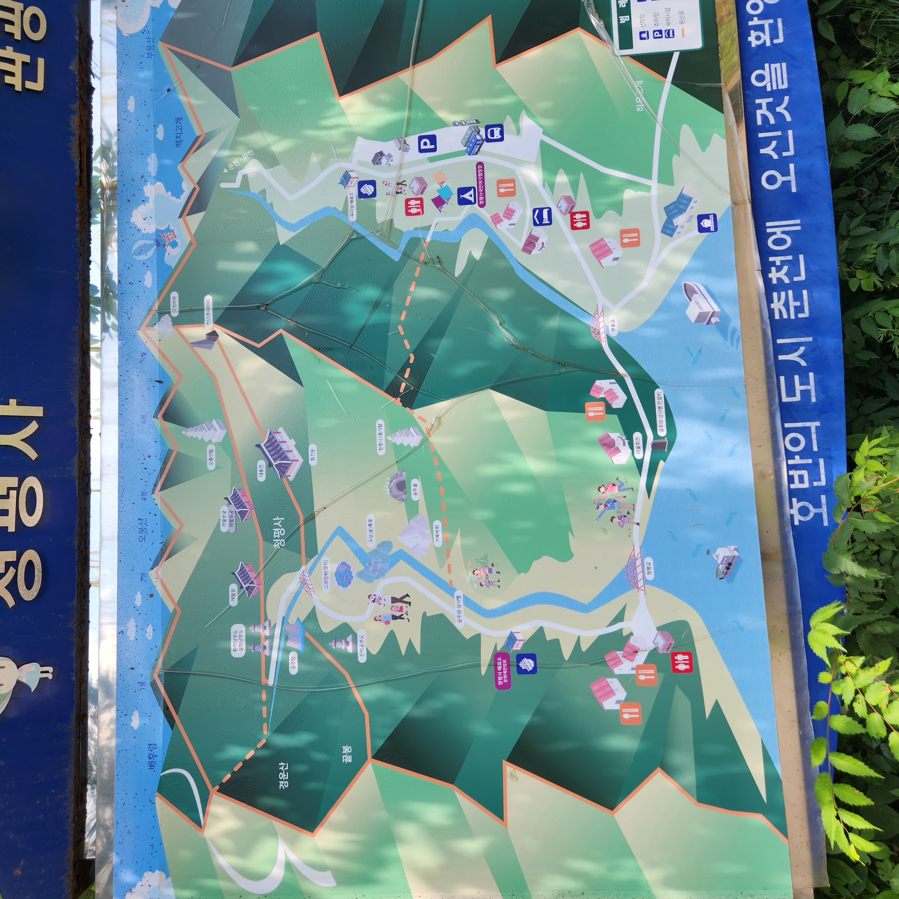
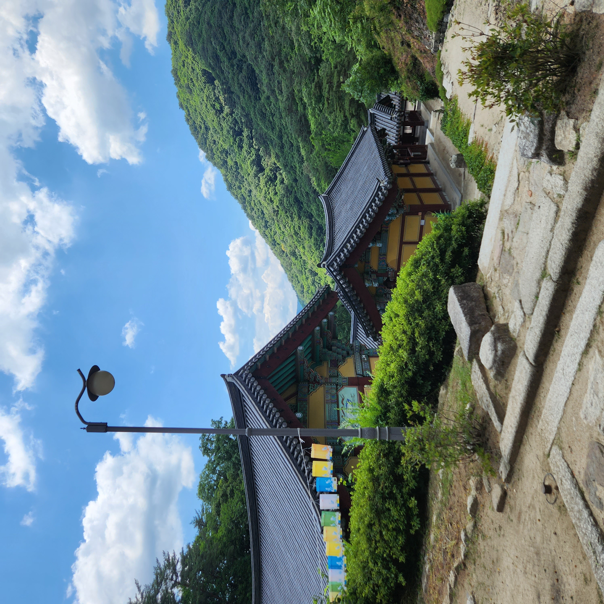
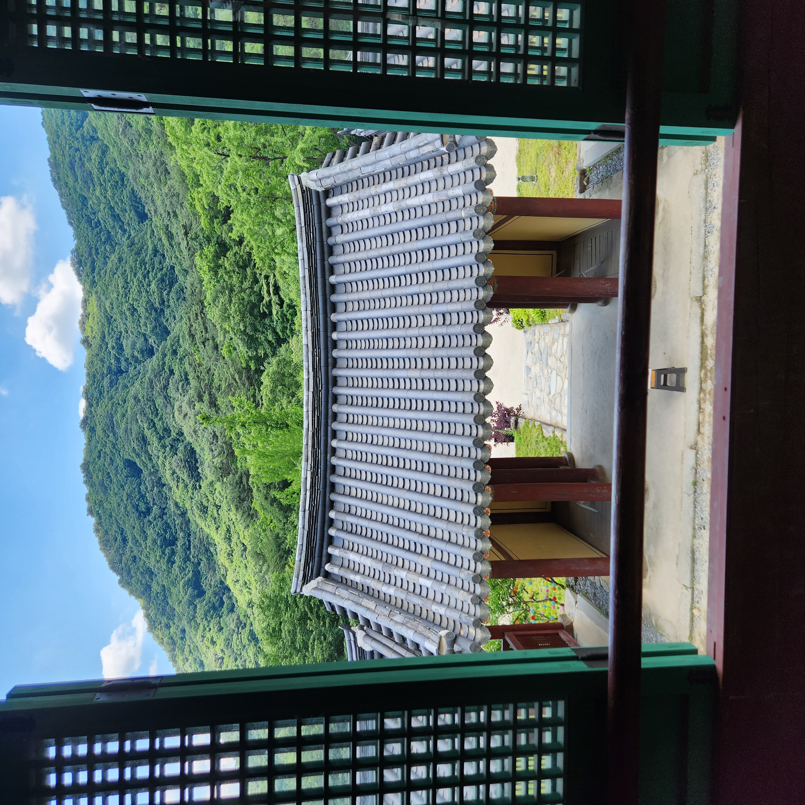
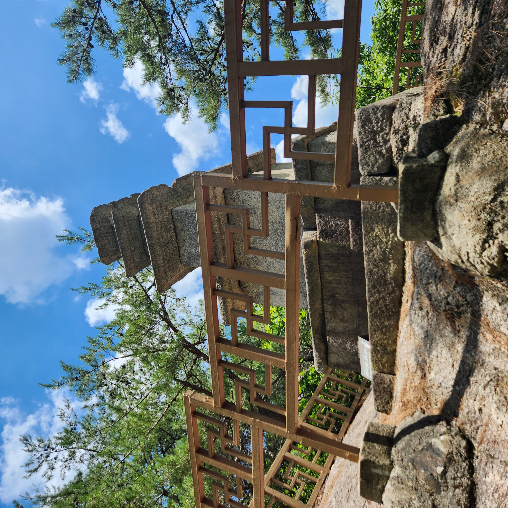

안녕하세요
저는 강원대학교에 재학하고 있는 최상철입니다.
chel11@naver.com으로 연락주세요.
나의 여행기
청평사 가는 길
300번 버스를 타고 춘천역에서 내린 다음 소양2교를 건너 소양강 댐 정상으로 가는 버스를 타고 종점에 내립니다.

청평사 지도
청평사 지도입니다.

청평사 사찰
청평사 사찰 전경

청평사 2층 마루
청평사 사찰 건물 2층에 있는 마루입니다.

청평사 비석

청평사 탑
첨성대와 비슷하게 생긴 탑입니다.

청평사 탑2
청평사 뒤에 있는 산을 올라가다보면 있는 샛길 꼭대기에 있는 탑입니다.

청평사 종
자취 요리 저장소
🥘 구수한 된장찌개
[재료 준비]
- 된장 2큰술, 물(또는 육수) 500ml
- 감자 1개, 양파 1/2개, 애호박 1/4개
- 두부 1/2모, 청양고추 1개, 대파 약간
[조리 순서]
- 감자와 양파, 애호박을 먹기 좋은 크기로 썰어줍니다.
- 냄비에 물을 붓고 단단한 감자부터 넣어 끓입니다.
- 물이 끓기 시작하면 된장을 곱게 풀어줍니다.
- 나머지 채소와 두부를 넣고 한소끔 더 끓인 뒤, 고추와 파로 마무리합니다.